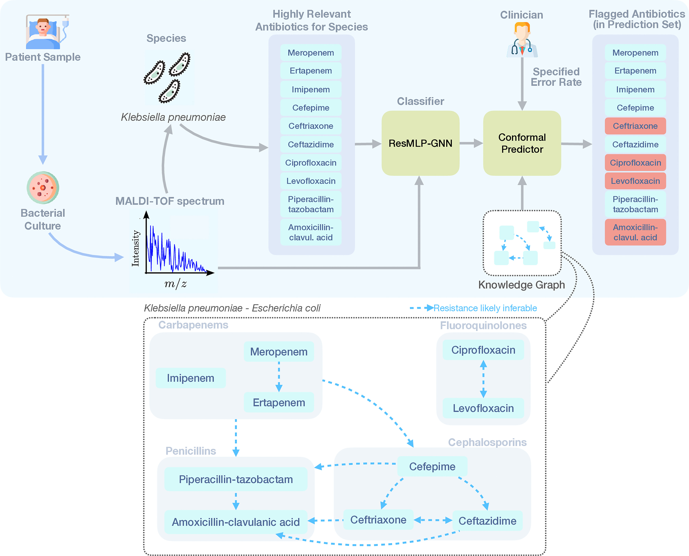
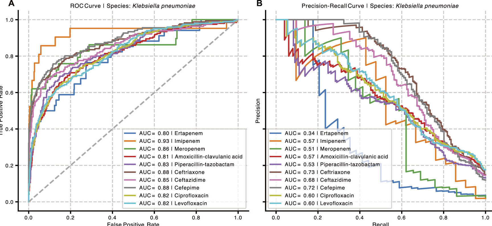

In 2017 I spent a few months at UNICAMP in Brazil. After the internship, I had just enough time and money left to visit Cabo Frio, close to Rio de Janeiro. It was beautiful: clear water, warm rocks, and the kind of coastal landscape that makes you forget that you still need to climb back after snorkelling.
On the last day, I slipped while climbing up a cliff after being pushed around by the waves. I cut my left leg. At first it looked annoying but manageable. Then it got infected. Back in Buenos Aires, the wound kept getting worse despite treatment, I spent months limping, and eventually I was left with an ugly black scar that is still there today. In the end, doctors found an antibiotic that worked. Many people with antimicrobial-resistant infections are not that lucky.
The World Health Organization describes antimicrobial resistance (AMR) as one of the top global public-health and development threats. The scale is hard to overstate: bacterial AMR was estimated to be directly responsible for 1.27 million deaths in 2019, and associated with 4.95 million deaths. AMR also makes routine medicine riskier. Surgery, cancer chemotherapy, caesarean sections, organ transplantation, and intensive care all rely on being able to prevent or treat infection when something goes wrong. If more infections stop responding to available drugs, modern medicine loses part of its safety net.
At the individual level, the problem is brutally practical. A patient arrives with an infection. The clinic needs to know which antimicrobial will work. The gold standard is antimicrobial susceptibility testing: grow the microorganism in the presence of different drugs and observe whether it survives. This is reliable, but it takes time. For serious infections, every hour matters, so clinicians often start treatment empirically and adjust once laboratory results arrive.
That gap between “we need to treat now” and “the definitive test will take longer” is where prediction models could help.
MALDI-TOF as a microbial fingerprint
Many clinical microbiology laboratories already use MALDI-TOF mass spectrometry to identify microorganisms. The idea is elegant: ionize a microbial sample, measure the mass-to-charge profile of abundant molecules, and compare the resulting spectrum to reference databases. In practice, MALDI-TOF is fast, comparatively cheap once the instrument is in place, and already integrated into routine diagnostic workflows.
The question is whether the same spectra can say more than “this is E. coli” or “this is Klebsiella pneumoniae”. Can they also reveal whether the isolate is resistant to a given antimicrobial? The seminal demonstration came from a Nature Medicine paper, which showed that MALDI-TOF spectra can contain enough signal to predict antimicrobial resistance directly from routine clinical microbiology data.
That was the starting point of our Bioinformatics 2023 paper, whose main contribution was to unify these predictions in a single multimodal model. Resistance is not a single binary property of a bacterium in isolation. It is always resistance to something: ampicillin, ciprofloxacin, meropenem, and so on. So instead of training separate models for each drug, we represented antimicrobials with chemical information and let one model learn across organism-drug pairs.
This framing matters because clinical data are sparse and uneven. Some species-drug combinations are common, others rare. Some hospitals have many examples, others few. A model that can share information across related antimicrobials has a better chance of generalizing to settings where direct training data are limited.
From accuracy to reliability
In our recent RECOMB 2025 paper, we moved to a different but complementary question: if a model predicts resistance from MALDI-TOF spectra, how can it produce a clinically useful warning list?
This is where conformal prediction enters. Standard classifiers often return probabilities, but those probabilities are not automatically trustworthy. A model can say “90%” and still be badly calibrated. In our setting, the conformal predictor does not return {susceptible} or {resistant} for each antibiotic separately. It returns a set of antibiotics predicted to be resistant for that isolate: in practice, a list of drugs that doctors should avoid, or at least treat as risky, while waiting for the slower culture-based susceptibility test.
The guarantee is about missing resistance. Given a clinician-chosen error level, the conformal set is constructed so that, on average, it contains all truly resistant antibiotics with the desired coverage. In other words, the model is allowed to be conservative and flag extra drugs, but it is statistically controlled in how often it fails to flag a drug to which the bacterium is actually resistant.

Figure 1. The full setup in the conformal AMR paper. A patient sample is cultured, a MALDI-TOF spectrum is collected, the species is identified, and a species-specific set of clinically relevant antibiotics is scored. A ResMLP-GNN classifier feeds a conformal predictor, which outputs the antibiotics flagged as resistant. The knowledge graph at the bottom encodes relationships between related antibiotics, such as carbapenems, fluoroquinolones, penicillins, and cephalosporins.
The technical challenge is that AMR prediction is structured. Species, antimicrobials, resistance mechanisms, and laboratory measurements are not independent islands. If a Klebsiella pneumoniae isolate is resistant to one carbapenem, that should inform how we think about related carbapenems. The knowledge graph is a way to inject that structure into the prediction problem instead of treating every antibiotic independently.
What the model sees, and what it returns
At input time, the model receives a MALDI-TOF spectrum and a species-specific panel of clinically relevant antibiotics. The classifier assigns each antibiotic a resistance score. The conformal layer then thresholds those scores using calibration data and returns a set such as {ceftriaxone, ciprofloxacin, levofloxacin, amoxicillin-clavulanic acid}: antibiotics that should not be trusted for this isolate according to the model.
The exact clinical interpretation would need careful validation and integration with expert workflows. These models are not replacements for microbiologists or susceptibility testing. The attractive possibility is earlier triage: provide a fast, uncertainty-aware “avoid these drugs” signal while the slower definitive assay is still running.

Figure 2. Before wrapping the model with conformal prediction, we still need a classifier that has useful signal. This figure shows ROC and precision-recall curves for Klebsiella pneumoniae across ten antibiotics. The ROC curves are generally strong, while the precision-recall curves vary more across drugs, which is expected in imbalanced resistance settings.
This is the base layer: the spectra contain information about resistance, but performance is not uniform across antibiotics. Some drugs are easier to predict than others, and class imbalance matters. That is exactly why a calibrated uncertainty layer is useful. We do not only want a score; we want an avoid-list whose probability of missing resistant antibiotics can be controlled.
Why this matters for AMR surveillance
The clinical use case is only one part of the story. AMR is also a surveillance problem. Hospitals and public-health systems need to know which resistant strains are spreading, where, and how quickly. MALDI-TOF is attractive here because spectra are already generated at scale in many labs. If prediction models can extract resistance-relevant signals from routine spectra, they could contribute to earlier warning systems.
But surveillance models must be robust to distribution shift. A model trained in one hospital may face different species prevalence, different sample-preparation protocols, different instruments, and different resistance mechanisms elsewhere. This is another reason uncertainty is not cosmetic. When a model is deployed outside the setting where it was trained, a calibrated warning that says “I do not know” can be as important as a correct positive prediction.

Figure 3. The conformal layer lets us choose an error target and then observe the trade-off between false discovery rate, false negative rate, and total error. Here, a false negative means failing to flag an antibiotic to which the isolate is resistant. A false discovery means flagging an antibiotic that would actually have been effective. The knowledge-graph variants reduce false discoveries while preserving the coverage behavior expected from conformal prediction.
This is the part I find most clinically relevant. If the set is too small, we may miss resistance and leave a dangerous antibiotic on the table. If the set is too large, we may discard useful drugs and push clinicians toward broader or more toxic alternatives. Conformal prediction does not remove that trade-off, but it makes the trade-off explicit and tunable.
A scar and a modelling problem
My scar from Cabo Frio is a small, personal reminder of something much larger. I had access to medical care, diagnostic follow-up, and eventually an antimicrobial that worked. The infection was painful and inconvenient, but it was not catastrophic. AMR turns that kind of episode into a much more dangerous lottery.
Machine learning will not solve antimicrobial resistance by itself. The WHO priorities are broader and more fundamental: prevent infections, improve diagnosis, ensure appropriate treatment, strengthen surveillance, develop new diagnostics and medicines, and use antimicrobials responsibly. Prediction models sit inside that larger ecosystem.
Still, there is a concrete role for computational work. If MALDI-TOF spectra are already being collected, and if we can turn them into early, statistically controlled lists of antibiotics to avoid, then we may be able to support faster treatment decisions and better surveillance. The key is not just to be accurate on a benchmark. It is to be reliable, transparent about uncertainty, and honest about when the model has reached the limits of what the data can say.
For me, that makes the problem worth working on. Somewhere between a beach in Cabo Frio, a scar on my left leg, and a mass spectrum in a microbiology lab, there is a reminder that antimicrobial resistance is not abstract. It is a modelling problem, a clinical problem, and, for many patients, a race against time.